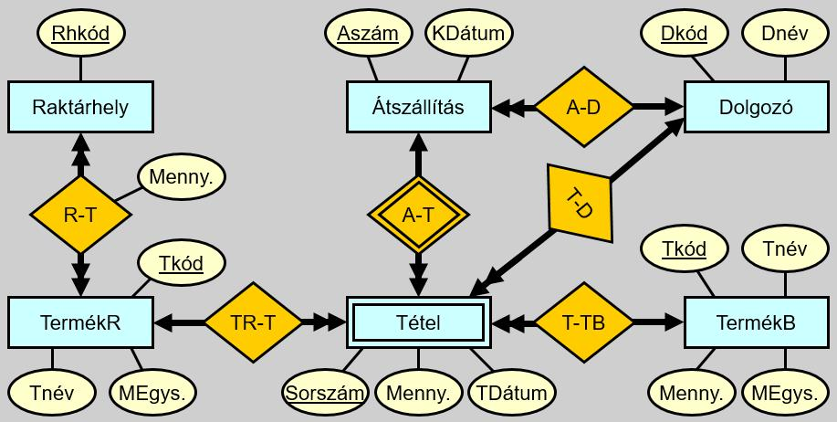

Adatbázisrendszerek
Ezt a kurzus az Adatbázisrendszerek alapjait tartalmazza.
Tematika
- Adat és adatbáziskezelés alapfogalmai
- Adatmodellezés
- Relációs adatmodell
- Relációs algebra és relációs kalkulus
- xBase alapÚ adatbáziskezelés
- Az SQL nyelv
- 4GL rendszerek, FoxPro alapok
- Alkalmazás fejlesztés FoxPro for Windows környezetben
- Beágyazatott SQL nyelv